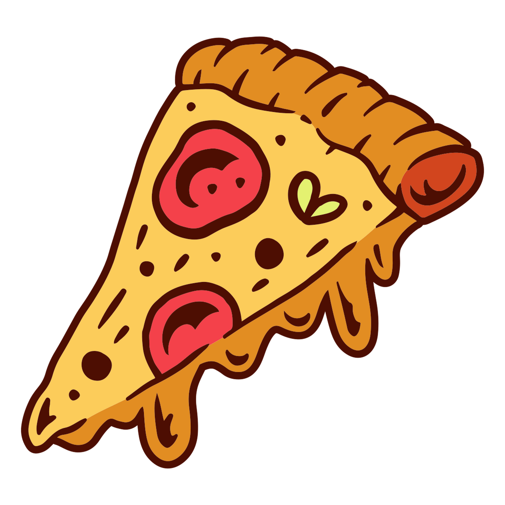

Un pequeño detalle de lo que idealizo mientras divago por las noches...
Verte en ese orden me vuelan las neuronas
Verte en ese orden me vuelan las neuronas

archivo 06 / apertura

Mi amor
No siempre supe cómo decirte lo que sentía. A veces me ganaba la vergüenza... pero nunca fue por falta de amor.
Este es uno de esos mensajes que no envié, pero escribí mil veces.
— Dami
Capaz hoy no es el momento perfecto, pero igual te pienso con ternura. Me basta imaginarte sonriendo para que el mundo pare un segundo.
— Dami
Alguna vez te hablé en sueños. No me acuerdo bien qué te dije, pero me desperté feliz. Creo que te decía que siempre fuiste refugio, aunque no lo supieras.
— Dami
Si alguna vez dudaste... sí, te extraño. Incluso cuando sonrío fuerte, te extraño bajito por dentro.
— Dami
No importa cuánto tiempo pase, lo que escribí no caduca. Son cartas sin timbre, pero con verdad.
— Dami